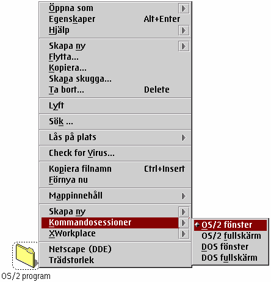

&xwp; WPS klass till†ter dig att fritt l„gga till nya poster i kontextmenyn hos alla mappar p† ditt system.
H„r „r en sk„rmbild ”ver den aktuella &xwp; konfigurationen (som definierades av installationsskriptet):

Du kommer att se samma popup poster hos alla mappar p† ditt system. Vad som h„nder nu om du trycker en av posterna i submenyn „r att &xwp; utf”r den valda aktionen p† just den mappen som kontextmenyn ”ppnades f”r.
Till exempel, om du v„ljer "&os2; f”nster" fr†n "Kommandoradens" submeny, kommer ett &os2; f”nster att ”ppnas, men s”kv„gen kommer redan att ha „ndrats till den mapp d„r kontextmenyn ”ppnades.
F”r detaljerad hj„lp om standard kontextmeny ut”kningar, v„lj en av de nya posterna och tryck "F1" n„r musknapp 1 fortfarande „r nere. Detta kommer att f”rklara just den speciella menyposten.
&xwp; till†ter dig att fritt modifiera alla dessa kontextmenyposter. Se
"Konfiguration av kontextmenyer" f”r detaljer.